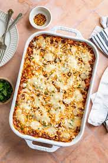

Lasagna Recipe

Description
Classic dairy free italian lasagna
loaded with beef and creamy vegan ricotta
Ingredients
- 1 package lasagna, soaked for 2 hours in cold water
- 2 pounds lean ground beef
- 2 teaspoons minced garlic
- 2 teaspoons dried basil
- 1 teaspoon dried parsley
- 1 teaspoon coarse salt
- 2 23-ounce jars marinara sauce
- vegan mozzarella shreds,
for topping
- 1 tablespoon chopped fresh parsley,
for garnish
- 1 1/2 cup slivered almonds,
soaked overnight and drained
- 6 ounces firm tofu, pressed*
- 1/2 cup unsweetened plain coconut yogurt
- 1 tablespoon lemon juice
- 1 teaspoon minced garlic
- 1 tablespoon nutritional yeast
- 1 teaspoon coarse salt
- 1/2 teaspoon dried parsley
- 1/4 cup almond milk
- Black pepper, to taste
Steps
- Prepare lasagna noodles by soaking in cold water for 2 hours or boiling according to package directions.
- Combine ricotta ingredients in a food processor bowl and blend until the mixture has reached ricotta-like texture. Transfer to a container and refrigerate until ready to use.
- Heat a large skillet to medium-high and brown the ground beef, breaking the meat up as it cooks. While the meat cooks, season with garlic, basil, parsley and salt. Then, stir in the marinara sauce. Remove from heat and set aside.
- Preheat oven to 375˚F.
- To layer the lasagna, spread a thin layer of meat sauce in the bottom of a 9×13 pan. Top with a single layer of lasagna noodles. Then, gently spread 1/3 vegan ricotta mixture on top. Next, add a layer of meat sauce. Repeat 2 more times and top with vegan mozzarella.
- Bake lasagna for 40 – 45 minutes or until the sides are bubbling and the mozzarella has melted. Remove from oven and allow the lasagna to rest for about 10 minutes before slicing.
- Garnish with fresh parsley before serving.